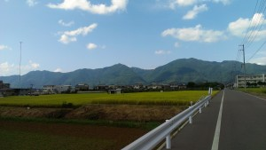
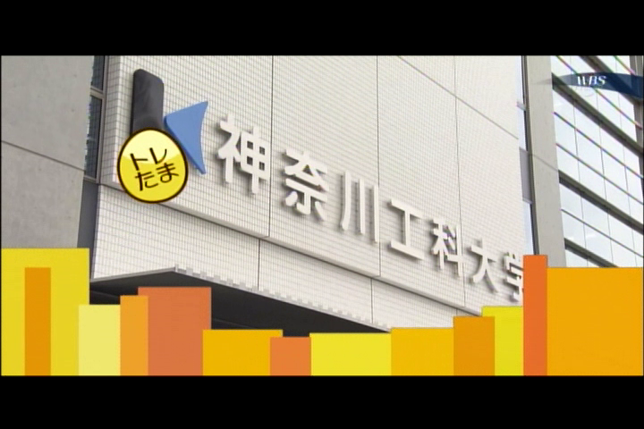

News
-
内藤 翔太 wrote a new post, 第一回セミナー 内藤翔太 自分を紹介！, on the site 白井研セミナー 4年 1か月前
情報学部情報メディア科学籍番号1423108 内藤 翔太(ナイトウショウタ）です。
神奈川県育ちの神奈っ子です。
好きなことは食べること、遊ぶことです。大学に入ってからは艦これに、はまっています。
嫁艦は扶桑さんです.また最近は「小説家になろう」でラノベ的なものを書いています。
こちらから見れますが恥ずかしいのであまり見ないでいただくと嬉しいです。プログラミングは苦手なので他の[…]
-
浅野 隆弥 wrote a new post, 自己紹介 1423145 浅野隆弥/Nerd、インターンシップを目指す。, on the site 白井研セミナー 4年 1か月前
こんにちは。
学籍番号1423145、浅野隆弥(あさの たかや)です。自己紹介
長野県出身です。こんな感じの山と田ん[…]  -
s1323150 wrote a new post, 第１３回 スケッチ教室つづき, on the site 白井研セミナー 4年 1か月前
こんにちは
高橋弘樹です。
１３回目のセミナーは、久しぶりに白井研究室で行いました。
今回もスケッチの事を学びました。
スケッチブックと鉛筆を用意します。
スケッチの前には、前回と同じく線を描く練習をします。
二点透視図法で立方体を書きます。
次に円柱を描きます。円柱の描き方にも手順があります。
手順を知っていればそれなりのものが楽に描けます。
横方向に一番長い楕円を描き、[…]
-
s1323150 wrote a new post, 第４回 1323150 高橋弘樹/漫画ジェネレーターの組たて, on the site 白井研セミナー 4年 1か月前
遅れましたが第４回です。
今回は、漫画ジェネレーターを組たてました。
漫画ジェネレーターは、自分が漫画の主人公となるマシンです。
なにいってるか分からんってひとは、リンク見てください。
動画もあります。
この漫画ジェネレーターを組たてました。
-
錦澤 竜也 wrote a new post, 第一回 自己紹介 目標とか、好きなこととか・・・, on the site 白井研セミナー 4年 1か月前
学籍番号1423115 錦澤竜也（ニシキザワ タツヤ）です！
神奈川は横浜で生まれ、横浜で育ちました。
以下プロフィールを・・・
好きな動物:ネコ
今、好きな食べ物:讃岐うどん
好きなゲーム:ドラクエ10
今、興味のあるもの：データベース、自然言語処理、データ構造、艦これ
私事ですが猫飼ってます。二匹飼ってます。以下2匹の写真です。
両方ともオスでともに1歳です。毛が白[…]
-
錦澤 竜也 wrote a new post, 第二回 "IVRC第14回大会2006年" 10年前のVRと今, on the site 白井研セミナー 4年 1か月前
学籍番号1423115 錦澤です。
今回IVRCに出展された作品を紹介したいと思います。
その前に・・・
IVRCとは何ぞや？というところから説明していきましょう！（・・・自分でもよくわかってなかった）
IVRCとは「国際学生対抗バーチャルリアリティーコンテスト(International collegiate Virtual Reality Contest)」のことで、学生が企画、制作したVR作品を競[…]

-
kai wrote a new post, 【書評】『ARプログラミング Processingでつくる拡張現実感のレシピ』を読んで, on the site Kai's Develope Diary 4年 1か月前
今日はタイトル通り、『ARプログラミング Processingでつくる拡張現実感のレシピ』の感想を書きたいと思います[…]
-
武田 竜平 wrote a new post, 本日よりセミナー始まりました -武田 竜平, on the site 白井研セミナー 4年 1か月前
初めまして。
白井セミナーに参加しました、武田 竜平(たけだ りゅうへい)
です。
まずは自己紹介をば…
ゲーム関連の研究室セミナーなので、[…]
-

admin wrote a new post, テレビアニメ「宇宙パトロールルル子」にご注目ください, on the site Shirai Lab 4年 1か月前
2016年4月より放映・ネット配信中の新番組「宇宙パトロールルル子」のエンディングスタッフロールに白井研究室から白井暁彦と藤倉伊織（4年生）の名前が掲載されております。関係各位への感謝とともに番組の紹介をさせていただきます。
公式サイト http://luluco.tv/
＜各画像のクレジット＞ ©TRIGGER・今石洋之／宇宙パトロールルル子製作委員会☆彡
＜ストーリー＞銀河指定宇宙移民特区O[…]
-
shirai wrote a new post, 野営ゼミ2016開催のお知らせ(4/29), on the site Shirai Lab 4年 2か月前
神奈川工科大学 情報メディア学科 白井研究室の毎年の恒例「野営ゼミ」を今年も開催します。
日付：4月29日（昭和の日）
場所：清川リバーランド＜主な参加者＞
・白井研究室 現役ラボメン（4年生＆大学院生）
・白井前期セミナーの3年生
・白井研究室卒業生
・白井先生担当のクラスアドバイザー担当1年生
・[…]
-
shirai wrote a new post, 発明「情報表示装置」が特許として登録されました, on the site Shirai Lab 4年 2か月前
大学のHPに掲載されましたでの一部加筆してお知らせします
情報メディア学科の白井暁彦准教授と谷中一寿教授が発明した「情報表示装置」が特許として登録されました
本発明は、複数の映像を一つのディスプレイ上に表示する際、新たに開発した信号処理アルゴリズムを用いれば、特定の映像を裸眼では見えなく（不可視化）することができ、不可視化された映像は偏光メガネ等を使うことによって見ることを可能にするものです。[…]
-
shirai wrote a new post, 「白井研究室通信」 第46号(2016/2/18発行)／多重化技術 ExField 発表・3/1にTEPIAにて成果発表会を開催, on the site Shirai Lab 4年 2か月前
45号から1年ぶりのご無沙汰です。白井研究室通信 第46号をお届けます。
■ 2015年度の卒業研究も以下のようなテーマで無事発表を終えました。
森 拓也：「ミュージアムのための多重化サイネージシステムの提案」
鈴木 百合彩：「Augmented TV における年齢推定方式の開発と評価」
津田 良太郎：「笑顔認識技術を利用したエンタテイメント体験の客観評価手法」
中澤 遥：「新し[…] -
kai wrote a new post, 【C++】簡易的なタイピングソフトをつくろう！, on the site Kai's Develope Diary 4年 2か月前
今日の『応用プログラミングA』の授業で一番苦戦した課題。
ソースを書く上で自分がつまずいた事をかいてみる。
プログラムの構成
構成としては次の通りだ。
・タイピングで使う単語帳のtxtファイルをつくる（メモ帳などで）
・ファイルを読み込む
・読み込んだファイルから日本語とローマ字の情報をそれぞれ変数に格納
・ランダムでどの単語を入力させるか選び表示させる
・入力させた後、表示された単語と入力された単語が一致する[…]
-
fmao wrote a new post, ArduinoとBluetoothを使ったキーボード入力！, on the site fmaoのサイト 4年 2か月前
お久しぶりです。打倒チアリーダーの方の古田真緒です。
この投稿は、「無線でキーボード入力がしたい！」と思った筆者が
同じことをしようとしている人の役に立ったらいいなと考えた結果、
生み出されたものです。
目次。
・必要なもの
・配線
・アプリケーション
・必要なもの
-Arduino Leonardo本体(ピンソケット有り)
マイコンボード。こ[…]

-
shirai wrote a new post, 2016年度白井研究室2次配属について, on the site Shirai Lab 4年 2か月前
本年度の2次配属について最大1名程度の採用可能性がありますが，希望者多数のため，以下の課題を設定します．
メールにて面談日程をご調整の上，ご準備ください（今週4/4～8は主に605室に在室です）．
まず以下のURLを読んでください
【ディプロマ・ポリシー】（情報メディア学科卒業に必要な要素(1)～(5)）【白井研究室，論文リスト】
自分の卒業研究のテーマについて，以下の要素を含めて計画をレポートしてくだ[…]
-
Ryotaro Tsuda wrote a new post, Twitterから自宅の蛍光灯を制御したときのお話, on the site 汗を流して飯が旨い 4年 2か月前
twitterから自宅の蛍光灯を制御してみました
やるに至った背景は，
部屋の模様替えをした際に，配置上壁にある蛍光灯のスイッチにアクセスできなくなってしまいました．蛍光灯はリモコン制御のLED照明なので，部屋中どこからでもリモコンで制御可能ですが，
その辺に転がって紛失しそうであったため，入口に常設することにしました．しかし，これだとベッドに寝ころびながら電気を消せない！！
ということで[…]

-
admin wrote a new post, Laval Virtual 2016で発表を行いました, on the site Shirai Lab 4年 2か月前
2016年3月23～27日にフランスLavalで開催された，世界最大のVRフェスティバル Laval Virtualにおいて，大学院生の鈴木さんが総合プロジェクトにおいて谷中先生らと開発したExField技術による多重化デモ「Glassless Augmented Display for public signage」の発表を行いました．
Laval Virtual 2016の様子はこちら
-
Ryotaro Tsuda wrote a new post, 自宅にファイルサーバーを設置してネット機器から接続できるようにしよう！～それ系の知識がないひとのための超初級編～, on the site 汗を流して飯が旨い 4年 3か月前
こんにちは
大学での卒業研究が無事終了し，来年からの社会人生活のため実家に帰ってきました！
そんな折，自分のMacbookProのみだとデータの管理がそろそろ危うくなってきたので
母艦(メインPC)の調達
デスクトップPC環境の構築
NASを買うほどでもないので，自宅のHDDを使ってファイルサーバー化
データ類を置いて各端末から閲覧・編集可能なようにと，体制を変えたいなあと思って取り組ん[…]

-
shirai wrote a new post, ワールドビジネスサテライト「トレたま」で研究成果が報道されました, on the site Shirai Lab 4年 3か月前
以下の番組で報道されました。
テレビ東京「ワールドビジネスサテライト」2016年2月24日放映
【トレンドたまご】角度で見え方変わるディスプレーなお、今回の番組で紹介された多重化技術「ExField」は、白井研究室の研究成果発表会「エンタテイメントシステム工学研究会」で口頭発表＆デモ展示いたします。
※映像の使用は許可を申請しています 
-
sakakibara wrote a new post, 白井研究室研究成果発表会, on the site R-Diary 4年 3か月前
平素は、格別のお引き立てを賜りありがとうございます。
さて、この度、白井研究室の科研費研究成果発表と共同研究を行っている企業の取り組みを紹介する研究会「エンタテイメントシステム工学研究会」を下記要領で開催します。
新技術の発表、白井准教授の専門とする科学コミュニケーションやエンタテイメント工学技術から、株式会社富士通ソーシアルサイエンスラボラトリといった企業を軸に、教育、医療、福祉、交通、施設、インフラ等へ、オープンな産学[…] - もっと読み込む